1、新增一个名称为test的bridge模式网络，网段为172.18.2.0/24，创建一个容器用test网络运行，要求能用宿主机网络访问。 1.1 创建一个名为test的bridge模式网络，并指定网段为172.18.2.0/24。 [root@Rocky 8 ~]75910 fb644e41a8f04795818274058d64d40302d7ef1aa03b23e836850889e8b@Rocky 8 ~]local local 2 b5f21fbd25d none null local 75910 fb644e4 test bridge local
1.2 运行容器，并将其连接到test网络。并且使用宿主机的网络命名空间来实现宿主机网络访问。 1 2 3 4 5 6 7 8 9 10 11 12 13 14 15 [root@Rocky8 ~]# docker run -it --rm --name aloine1 --network test alpine sh ip a ping 172.18.2.2PING 172.18.2.2 (172.18.2.2) 56(84) bytes of data.from 172.18.2.2: icmp_seq =1 ttl =64 time =0.103 msfrom 172.18.2.2: icmp_seq =2 ttl =64 time =0.042 msfrom 172.18.2.2: icmp_seq =3 ttl =64 time =0.047 ms
2、创建一个harbor镜像仓库，把镜像上传到harbor仓库并能从里面下载镜像创建容器。 2.1 分别准备docker compose 、harbor安装包文件，准备2台host主机，一台安装docker(IP:10.0.0.133),一台安装（Harbor）。 1 2 https://gi thub.com/goharbor/ harbor //gi thub.com/goharbor/ harbor/releases
2.2 在10.0.0.136使用脚本安装docker、docker compose 、harbor。 1 2 3 4 5 6 7 8 9 10 11 12 13 14 15 16 17 18 19 20 21 22 23 24 25 26 27 28 29 30 31 32 33 34 35 36 37 38 39 40 41 42 43 44 45 46 47 48 49 50 51 52 53 54 55 56 57 58 59 60 61 62 63 64 65 66 67 68 69 70 71 72 73 74 75 76 77 78 79 80 81 82 83 84 85 86 87 88 89 90 91 92 93 94 95 96 97 98 99 100 101 102 103 104 105 106 107 108 109 110 111 112 113 114 115 116 117 118 119 120 121 122 123 124 125 126 127 128 129 130 131 132 133 134 135 136 137 138 139 140 141 142 143 144 145 146 147 148 149 150 151 152 153 154 155 156 157 158 159 160 161 162 163 164 165 166 167 168 169 170 171 172 173 174 175 176 177 178 179 180 181 182 183 184 185 186 187 188 189 190 191 192 193 194 195 196 197 198 199 200 201 202 203 204 205 206 207 [root@Rocky8 ~]5.2 .tgz"20.10.10" "5:${DOCKER_VERSION}~3-0~`lsb_release -si`-`lsb_release -cs`" 2.6 .1 2.5 .2 '{print $1}' `'{print $1}' `123456 "echo -e \\033[1;32m" "echo -e \\033[1;31m" END ="\033[m" /etc/ os-release60 "echo -en \\033[${RES_COL}G" "echo -en \\033[1;32m" "echo -en \\033[1;31m" "echo -en \\033[1;33m" "echo -en \E[0m" "$1" && $MOVE_TO_COL "[" if [ $2 = "success" -o $2 = "0" ] ;then${SETCOLOR_SUCCESS} " OK " $2 = "failure" -o $2 = "1" ] ;then ${SETCOLOR_FAILURE} "FAILED" else ${SETCOLOR_WARNING} "WARNING" ${SETCOLOR_NORMAL} "]" if [ $ID = "centos" -o $ID = "rocky" ];thenif [ $VERSION_ID = "7" ];then/etc/yum .repos.d/docker.repo <<EOF0 //mi rrors.tuna.tsinghua.edu.cn/docker-ce/ linux/centos/ 7 /x86_64/ stable/else /etc/yum .repos.d/docker.repo <<EOF0 //mi rrors.tuna.tsinghua.edu.cn/docker-ce/ linux/centos/ 8 /x86_64/ stable/${COLOR_FAILURE} "Docker有以下版本" ${END} ${COLOR_FAILURE} "5秒后即将安装: docker-" ${DOCKER_VERSION} " 版本....." ${END} ${COLOR_FAILURE} "如果想安装其它Docker版本，请按ctrl+c键退出，修改版本再执行" ${END} 5 $DOCKER_VERSION docker-ce-cli-$DOCKER_VERSION \"Base,Extras的yum源失败,请检查yum源配置" 1 ;exit ; }else /dev/ null && $COLOR "Docker已安装，退出" 1 && exit "更新包索引失败" 1 ; exit 1 ; } "安装相关包失败" 1 ; exit 2 ; } //mi rrors.tuna.tsinghua.edu.cn/docker-ce/ linux/ubuntu/g pg | sudo apt-key add -"deb [arch=amd64] https://mirrors.tuna.tsinghua.edu.cn/docker-ce/linux/ubuntu $(lsb_release -cs) stable" ${COLOR_FAILURE} "Docker有以下版本" ${END} ${COLOR_FAILURE} "5秒后即将安装: docker-" ${UBUNTU_DOCKER_VERSION} " 版本....." ${END} ${COLOR_FAILURE} "如果想安装其它Docker版本，请按ctrl+c键退出，修改版本再执行" ${END} 5 ${UBUNTU_DOCKER_VERSION} docker-ce-cli=${UBUNTU_DOCKER_VERSION} if [ $? -eq 0 ];then"安装软件包成功" 0 else "安装软件包失败，请检查网络配置" 1 exit /etc/ docker/etc/ docker/daemon.json <<-'EOF' "registry-mirrors" : ["https://si7y70hh.mirror.aliyuncs.com" ]"Docker 安装成功" 0 || color "Docker 安装失败" 1 'alias rmi="docker images -qa|xargs docker rmi -f"' >> ~/.bashrc'alias rmc="docker ps -qa|xargs docker rm -f"' >> ~/.bashrcif [ $ID = "centos" -o $ID = "rocky" ];then${COLOR_SUCCESS} "开始安装 Docker compose....." ${END} 1 if [ ! -e ${DOCKER_COMPOSE_FILE} ];then//g et.daocloud.io/docker/ compose/releases/ download/v${DOCKER_COMPOSE_VERSION}/ docker-compose-$(uname -s)-$(uname -m) -o /usr/ bin/docker-composeelse ${DOCKER_COMPOSE_FILE} /usr/ bin/docker-compose/usr/ bin/docker-composeelse if docker-compose --version ;then${COLOR_SUCCESS} "Docker Compose 安装完成" ${END} else ${COLOR_FAILURE} "Docker compose 安装失败" ${END} exit ${COLOR_SUCCESS} "开始安装 Harbor....." ${END} 1 if [ ! -e harbor-offline-installer-v${HARBOR_VERSION} .tgz ] ;then//gi thub.com/goharbor/ harbor/releases/ download/v${HARBOR_VERSION}/ harbor-offline-installer-v${HARBOR_VERSION} .tgz || ${COLOR_FAILURE} "下载失败!" ${END} ${HARBOR_BASE} ] || mkdir ${HARBOR_BASE} ${HARBOR_VERSION} .tgz -C ${HARBOR_BASE} ${HARBOR_BASE} /harbor"/^hostname/s/reg.mydomain.com/${HARBOR_NAME}/" harbor.yml"/^https/s/(https:)/#\1/" harbor.yml"s/(port: 443)/#\1/" harbor.yml"/certificate:/s/(.*)/#\1/" harbor.yml"/private_key:/s/(.*)/#\1/" harbor.yml"s/Harbor12345/${HARBOR_ADMIN_PASSWORD}/" harbor.yml's#^data_volume: /data#data_volume: /data/harbor#' harbor.yml${HARBOR_BASE} /harbor/i nstall.sh && ${COLOR_SUCCESS} "Harbor 安装完成" ${END} || ${COLOR_FAILURE} "Harbor 安装失败" ${END} /lib/ systemd/system/ harbor.service <<EOF//gi thub.com/vmware/ harbor5 /usr/ bin/docker-compose -f ${HARBOR_BASE}/ harbor/docker-compose.yml up/usr/ bin/docker-compose -f ${HARBOR_BASE}/ harbor/docker-compose.yml down/dev/ null || ${COLOR} "Harbor已配置为开机自动启动" ${END} if [ $? -eq 0 ];then "Harbor安装完成!" 0 "-------------------------------------------------------------------" "请访问链接: \E[32;1mhttp://${HARBOR_IP}/\E[0m" "用户和密码: \E[32;1madmin/${HARBOR_ADMIN_PASSWORD}\E[0m" else "Harbor安装失败!" 1 exit /dev/ null && ${COLOR_FAILURE} "Docker已安装" ${END} || install_docker/dev/ null && ${COLOR_FAILURE} "Docker Compose已安装" ${END} || install_docker_compose
2.3 登陆Harbor web页面，账号admin,密码123456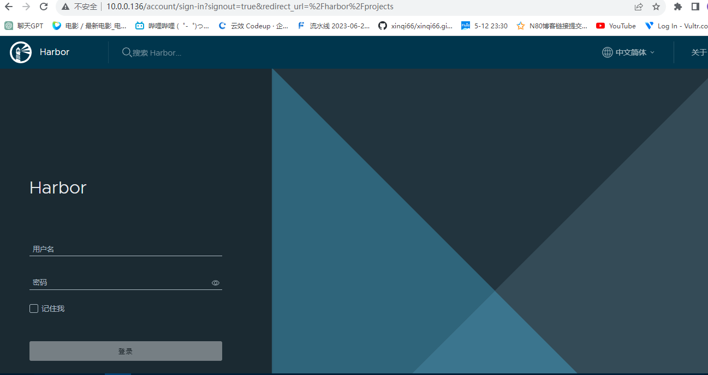 2.4 新建项目test。 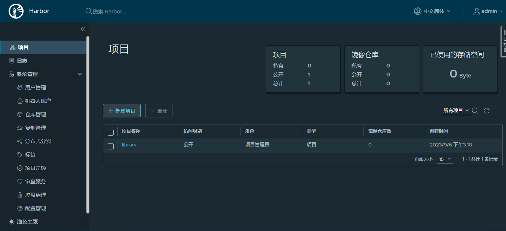
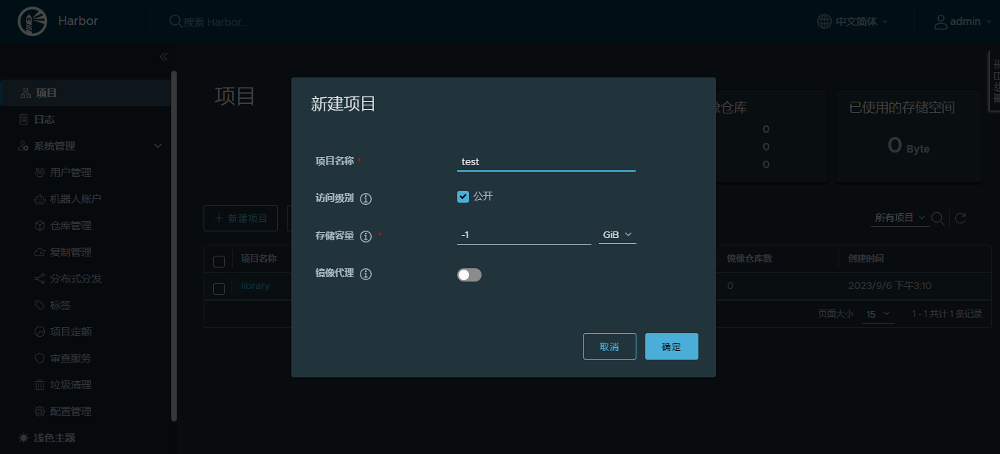
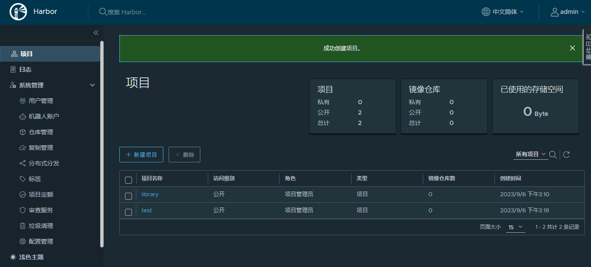
2.5 开始在10.0.0.133上传镜像，先安装好docker和准备好需要上传的镜像文件。 1 2 3 4 5 6 7 8 9 10 11 12 13 14 15 16 17 18 19 20 21 22 23 24 25 26 27 28 29 30 31 [root@Rocky8 ~]"registry-mirrors" : ["https://lhpac0xk.mirror.aliyuncs.com" ],"insecure-registries" :["10.0.0.136" ]in /root/ .docker/config.json.// docs.docker.com/engine/ reference/commandline/ login/"auths" : {"10.0.0.136" : {"auth" : "YWRtaW46MTIzNDU2" 10.0 .0.136 /test/ nginx-rocky2]8644 a12385cf: Pushed 3977 ac14dc8c: Pushed 65 dbea0a4b39: Pushed 1.20 : digest: sha256:da1791b11a5293dea7889d9e84c05ac6a3cf97a171ae40d75508899c3bac06c2 size: 1368
2.6. 在web页面查看镜像是否上传成功。 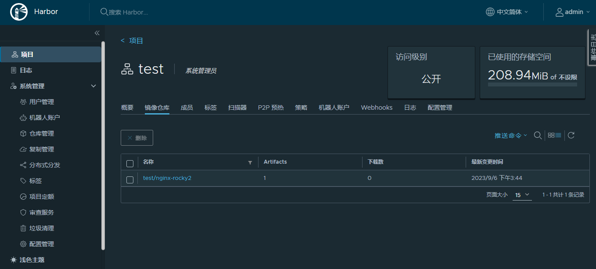
2.7 拉取镜像。 1 2 3 4 5 6 7 8 9 10 11 12 13 14 15 [root@Rocky8 ~] # docker pull 10 .0 .0 .136 /test/nginx-rocky2:1 .20 1 .20 : Pulling from test/nginx-rocky210 .0 .0 .136 /test/nginx-rocky2:1 .20 10.0.0.136 /test/nginx-rocky2:1 .20 [root@Rocky8 ~] # docker images10.0.0.136 /test/nginx-rocky2 1 .20 80ce005ca7b7 3 days ago 528MB10.0.0.136 /test/mysql 8 .0 .29 -oracle 33037edcac9b 14 months ago 444MB
3、用haproxy实现两个web服务器的负载均衡。 3.1 使用haproxy实现两个harbor镜像仓库的HA和负载均衡 环境准备
1 2 3 4 5 准备5 台主机分别为10.0.0.137 ,138 安装好harbor服务10.0.0.134 HAproxy192.168.10.200 cleant192 .168 .10 .100
架构图
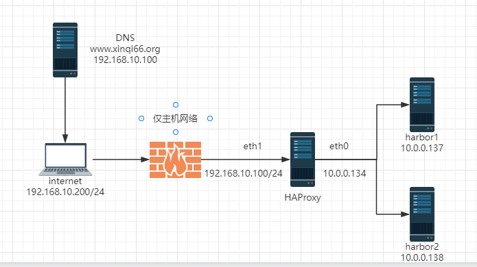
3.2 在安装好的harbor上实现高可用 分别在harbor137和138上配置双向同步。新建仓库目标和，复制管理项目，137地址指向138。138地址指向137。 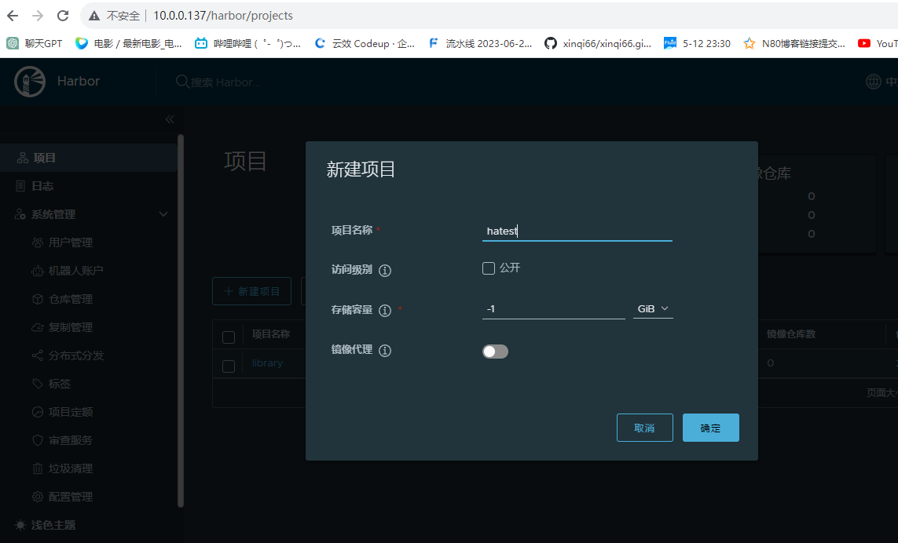
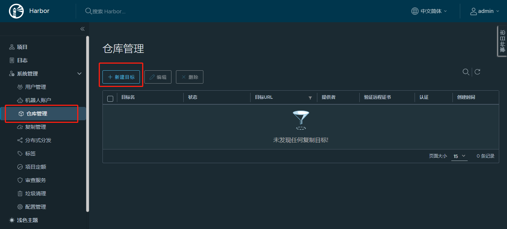
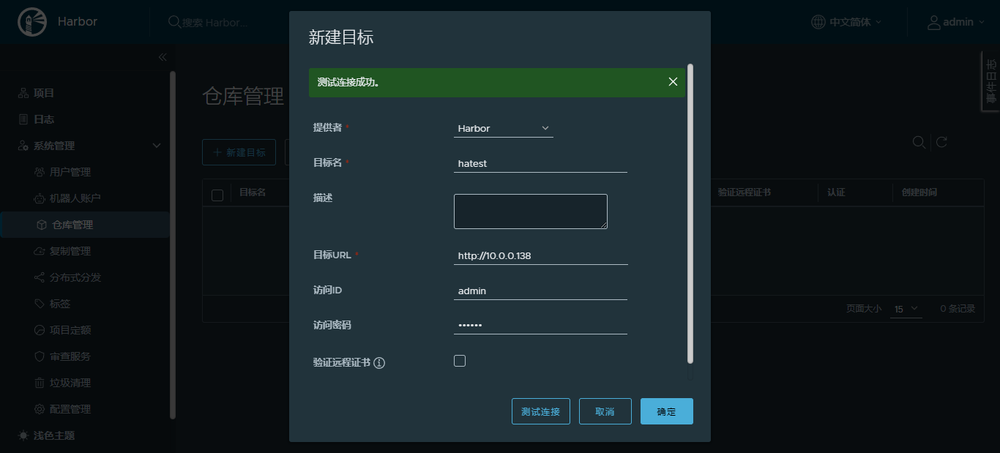
3.3 创建复制规则 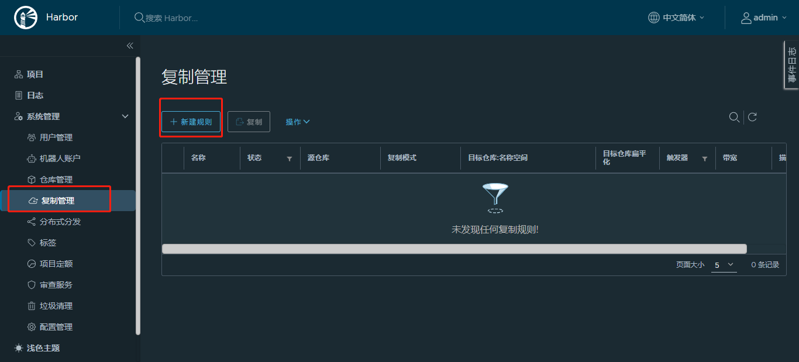
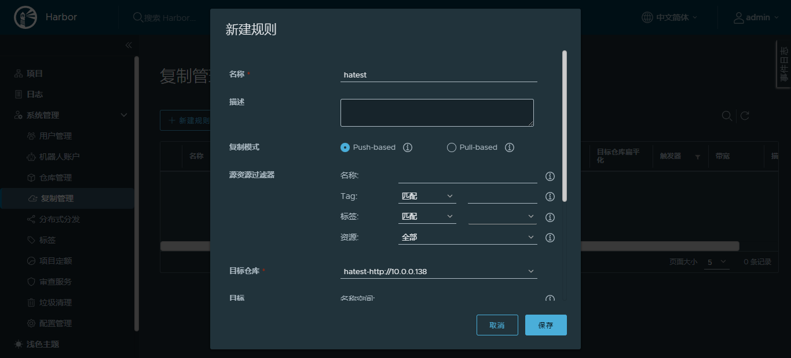
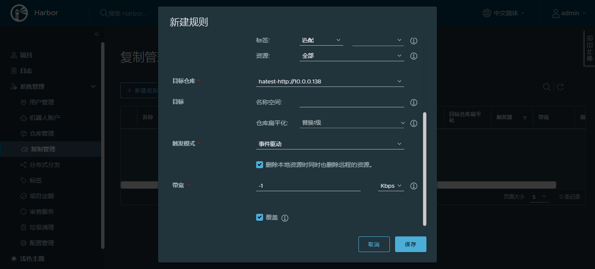
3.4 分别在137和138上上传镜像查看镜像是否能够复制到对方仓库中 1 2 3 4 5 6 7 8 9 10 11 12 13 14 15 16 17 18 19 20 21 22 23 24 25 26 27 28 29 30 31 32 33 34 35 36 37 38 39 40 41 42 43 [root@Rocky8 ~]"registry-mirrors" : ["https://lhpac0xk.mirror.aliyuncs.com" ],"insecure-registries" :["10.0.0.137" ,"10.0.0.138" ]in /root/ .docker/config.json.// docs.docker.com/engine/ reference/commandline/ login/in /root/ .docker/config.json.// docs.docker.com/engine/ reference/commandline/ login/10.0 .0.137 /hatest/my sql]8613 b3ca0560: Pushed 25 dc86c6646d: Pushed 4 b2f0167d834: Pushed 5162 a1b305a9: Pushed 35 dd272baf55: Pushed 27 df4ae8cdd9: Pushed 8.0 .29 -oracle: digest: sha256:44 f98f4dd825a945d2a6a4b7b2f14127b5d07c5aaa07d9d232c2
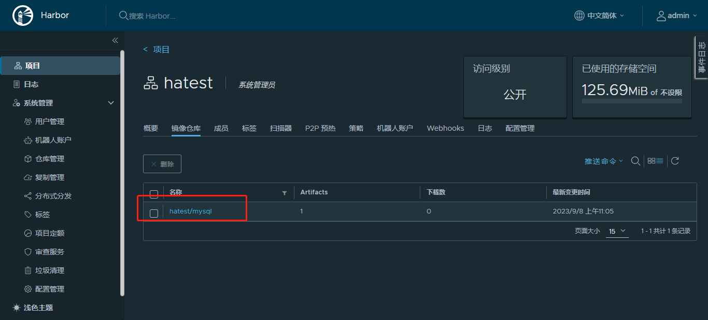
3.5 配置HAProxy作为反向代理 3.6 使用脚本编译安装HAProxy,先下载lua和HAProxy源码编译包 http://www.lua.org/download.html lua下载地址
http://www.haproxy.org/#down HAProxy下载地址
http://www.haproxy.org/download/2.6/src/haproxy-2.6.15.tar.gz
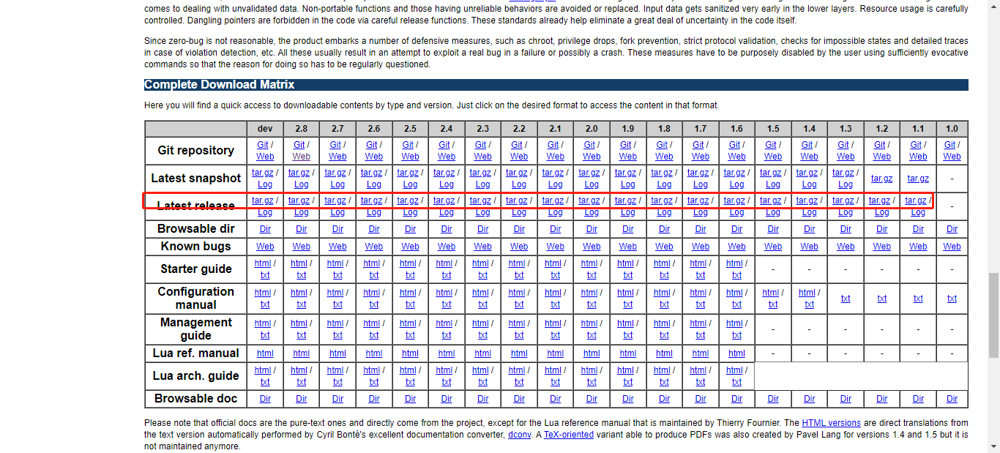
1 2 3 4 5 6 7 8 9 10 11 12 13 14 15 16 17 18 19 20 21 22 23 24 25 26 27 28 29 30 31 32 33 34 35 36 37 38 39 40 41 42 43 44 45 46 47 48 49 50 51 52 53 54 55 56 57 58 59 60 61 62 63 64 65 66 67 68 69 70 71 72 73 74 75 76 77 78 79 80 81 82 83 84 85 86 87 88 89 90 91 92 93 94 95 96 97 98 99 100 101 102 103 104 105 106 107 108 109 110 111 112 113 114 115 116 117 118 119 120 121 122 123 124 125 126 127 128 129 130 131 132 133 134 135 136 137 138 139 140 141 142 143 144 145 146 147 148 149 150 151 152 153 154 155 156 157 158 159 160 161 162 163 164 165 166 167 168 169 170 171 172 173 [root@Rocky8 ~]2.6 .15 .tar.gz5.4 .6 .tar.gz0 directories, 4 files2.6 .15 ${HAPROXY_VERSION} .tar.gz5.4 .6 ${LUA_VERSION} .tar.gz/apps/ haproxy/usr/ local/src'/^CPU\(s\)/{print $2}' `'{print $1}' )123456 192.168 .10.100 192.168 .10.101 192.168 .10.102 192.168 .10.103 /etc/ os-release60 "echo -en \\033[${RES_COL}G" "echo -en \\033[1;32m" "echo -en \\033[1;31m" "echo -en \\033[1;33m" "echo -en \E[0m" "$1" && $MOVE_TO_COL "[" if [ $2 = "success" -o $2 = "0" ] ;then${SETCOLOR_SUCCESS} " OK " $2 = "failure" -o $2 = "1" ] ;then ${SETCOLOR_FAILURE} "FAILED" else ${SETCOLOR_WARNING} "WARNING" ${SETCOLOR_NORMAL} "]" if [ ! -e ${LUA_FILE} ];then"缺少${LUA_FILE}文件!" 1 exit ${HAPROXY_FILE} ];then"缺少${HAPROXY_FILE}文件!" 1 exit else "相关文件已准备!" 0 if [ $ID = "centos" -o $ID = "rocky" ];then$ID = "ubuntu" ];thenelse "不支持此操作系统!" 1 0 ] || { color 'HAPROXY 启动失败,退出!' 1 ; exit ; }${LUA_FILE} -C ${SRC_DIR} ${LUA_FILE%.tar*} ${SRC_DIR} /${LUA_DIR} ${CWD} ${HAPROXY_FILE} -C ${SRC_DIR} ${HAPROXY_FILE%.tar*} ${SRC_DIR} /${HAPROXY_DIR} ${CPUS} ARCH=x86_64 TARGET=linux-glibc USE_PCRE=1 USE_OPENSSL=1 USE_ZLIB=1 USE_SYSTEMD=1 USE_CPU_AFFINITY=1 USE_LUA=1 LUA_INC=${SRC_DIR} /${LUA_DIR}/ src/ LUA_LIB=${SRC_DIR}/ ${LUA_DIR} /src/ PREFIX=${HAPROXY_INSTALL_DIR} ${HAPROXY_INSTALL_DIR} 0 ] && color "HAPROXY编译安装成功" 0 || { color "HAPROXY编译安装失败,退出!" 1 ;exit ; }/usr/ sbin/haproxy ] || ln -s ${HAPROXY_INSTALL_DIR}/ sbin/haproxy /u sr/sbin/ &> /dev/ null/etc/ haproxy ] || mkdir /etc/ haproxy &> /dev/ null /var/ lib/haproxy/ ] || mkdir -p /var/ lib/haproxy/ &> /dev/ null/etc/ haproxy/haproxy.cfg <<-EOF100000 /var/ lib/haproxy/ haproxy.sock mode 600 level admin99 99 /var/ lib/haproxy/ haproxy.pid127.0 .0.1 local3 info100000 300000 ms300000 ms300000 ms0.0 .0.0 :9999 ${STATS_AUTH_USER} :${STATS_AUTH_PASSWORD} 99 haproxy99 -g haproxy -d /var/ lib/haproxy -M -r -s / sbin/nologin haproxy/lib/ systemd/system/ haproxy.service <<-EOF/usr/ sbin/haproxy -f / etc/haproxy/ haproxy.cfg -c -q/usr/ sbin/haproxy -Ws -f / etc/haproxy/ haproxy.cfg -p /var/ lib/haproxy/ haproxy.pid/bin/ kill -USR2 $MAINPID /dev/ null && color 'HAPROXY安装完成!' 0 || { color 'HAPROXY 启动失败,退出!' 1 ; exit ; }"-------------------------------------------------------------------" "请访问链接: \E[32;1mhttp://${LOCAL_IP}:9999/haproxy-status\E[0m" "用户和密码: \E[32;1m${STATS_AUTH_USER}/${STATS_AUTH_PASSWORD}\E[0m"
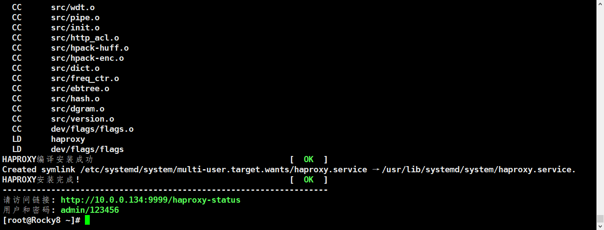
访问页面
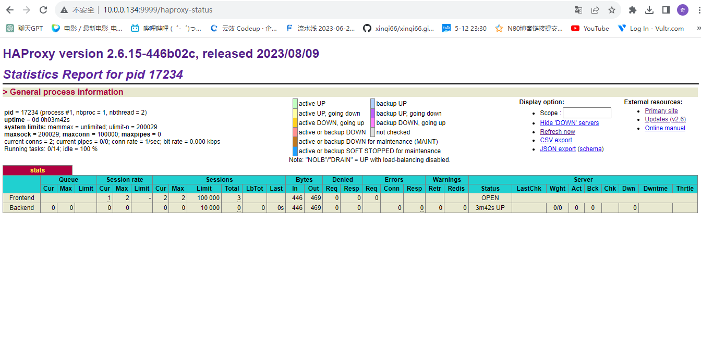
配置HAProxy
1 2 3 4 5 6 7 8 9 10 11 12 13 14 15 16 17 18 19 20 21 22 23 24 25 26 27 28 29 30 31 32 33 [root@Rocky8 ~ ]frontend www.xinqi66.org_80 bind 192.168 .10 .100 :80 use_backend www.xinqi66.org_80 backend www.xinqi66.org_80 cookie SERVERID insert indirect nocache server web1 10.0 .0 .137 :80 check inter 3000 fall 3 rise 5 cookie web1 server web2 10.0 .0 .138 :80 check inter 3000 fall 3 rise 5 cookie web2 root@Rocky8 ~ ]root@Rocky8 ~ ]root@Rocky8 ~ ]HTTP/1.1 200 OK server: nginx date: Mon, 11 Sep 2023 01:47:46 GMT content-type: text/html content-length: 906 last-modified: Tue, 28 Jun 2022 18:25:26 GMT etag: "62bb4796-38a" cache-control: no -store, no -cache, must-revalidate accept-ranges: bytes x-frame-options: DENY content-security-policy: frame-ancestors 'none' set-cookie: SERVERID=web2; path=/
3.7 在192.168.10.200上配置好DNS并访问HAproxy地址FQDN，显示HARBOR页面。 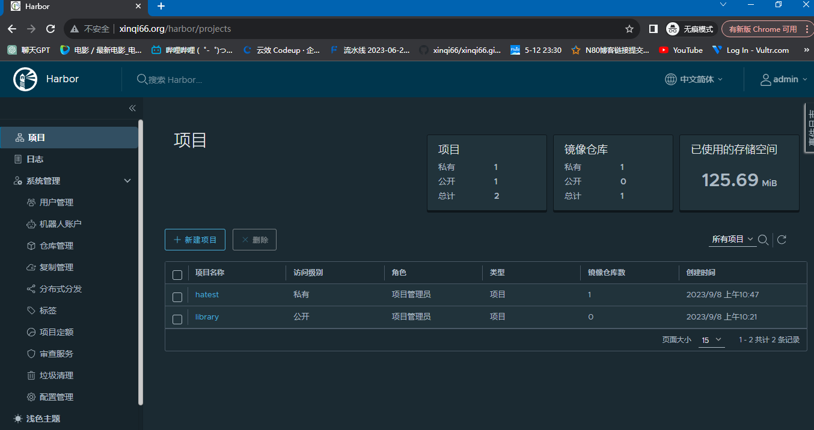
查看HAproxy状态页面，查看web1,web2启动状态。
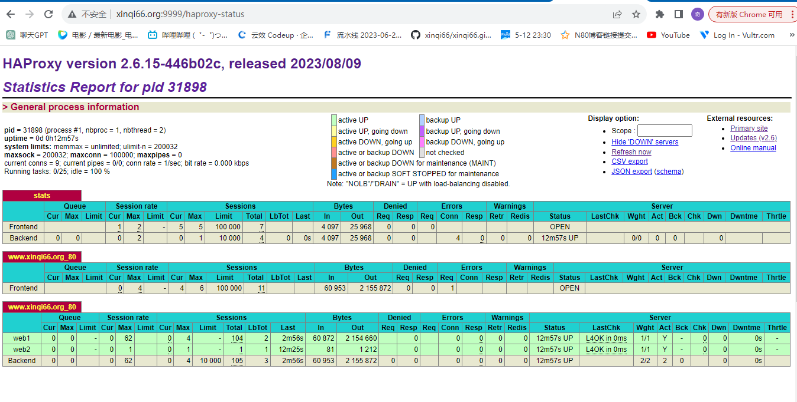